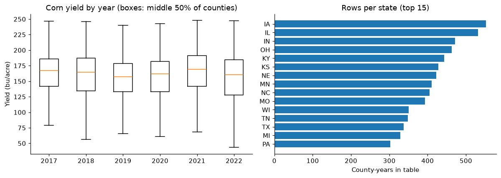
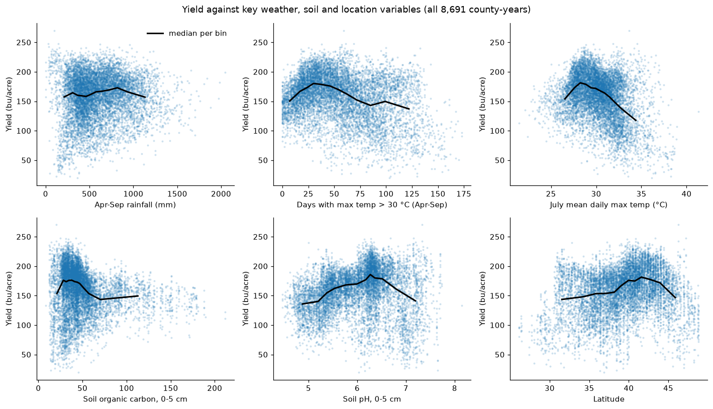
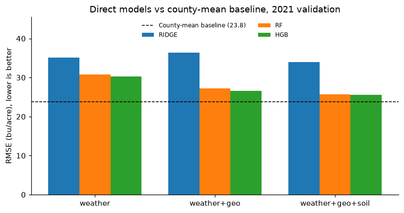
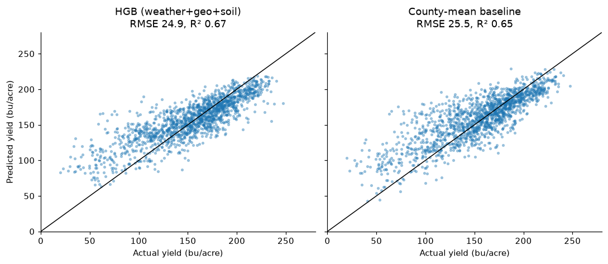
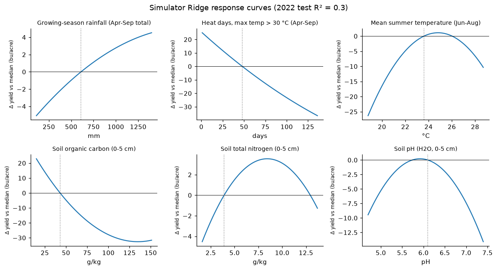
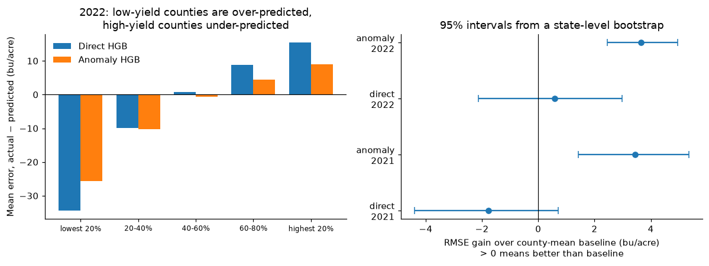
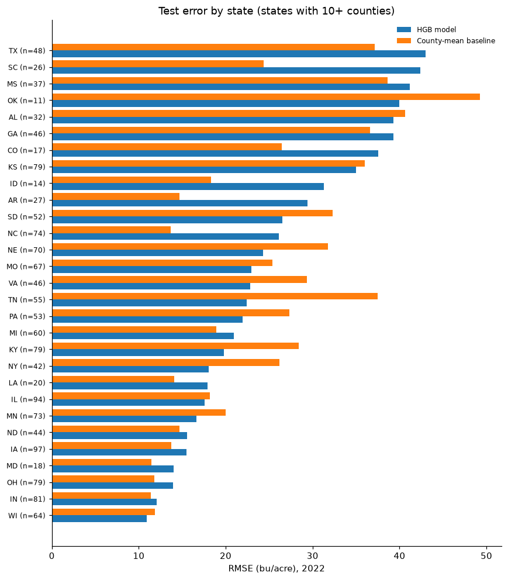
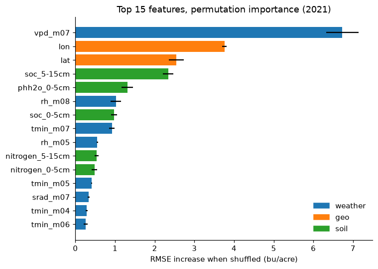
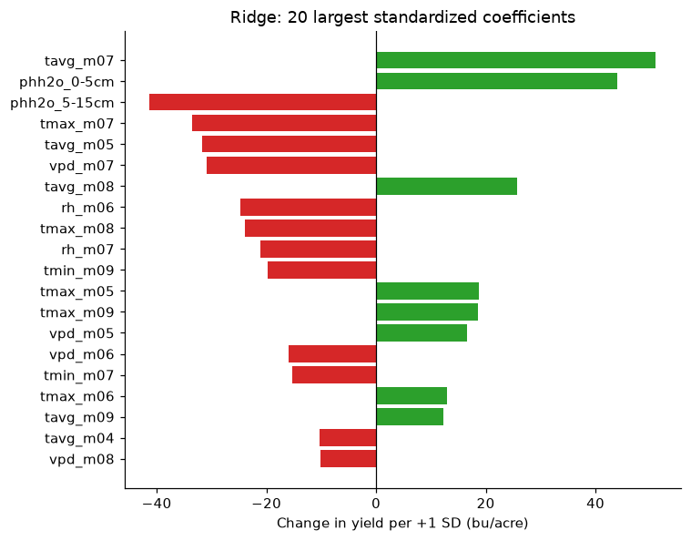

The Answer in Brief
- Question: how well can a county's corn yield (bu/acre) be predicted from April–September weather, topsoil chemistry and location, and how much does each group add over the county's own historical average?
- Data: 8,691 county-years (1,898 counties, 32 states, 2017–2022) built from CropNet (USDA yields + WRF-HRRR weather), ISRIC SoilGrids and US Census boundaries.
- Key fact about the data: 81% of yield variance is between counties, so a county's own average is a very strong baseline (Section 2).
- Direct models that predict yield from weather, soil and location do not beat that baseline (2021: 25.61 vs 23.83 RMSE; 2022: 24.90 vs 25.48, within noise).
- The anomaly model (county average + a weather-driven correction), chosen on 2021, beats the baseline on the untouched 2022 test year: RMSE 21.82 vs 25.48, 95% bootstrap interval for the gain +2.5 to +5.0 bu/acre.
- Soil adds little once location or county history is known. Weather departures carry the useful signal.
- Main failures: low-yield and newly reported counties (mostly in the Southeast) and irrigated western counties. One test year only; results are associations, not causes.
Problem Formulation & Scope
Agricultural planners, crop insurers, and grain producers need reliable estimates of crop yield before harvest to hedge price risks, arrange logistics, and optimize regional storage. However, crop yield is influenced by a complex mixture of weather fluctuations (such as summer heat stress and droughts), inherent soil characteristics (organic carbon, nutrient availability, pH), and geographic factors.
Core Research Question
How well can county-level corn yield (in bushels per acre) be predicted from growing-season weather, soil composition, and geographic coordinates, and how much predictive power does each group of features add over a simple historical average baseline?
Unit of Observation & Prediction Time
One row represents: Exactly one US county in one calendar year (e.g., Story County, Iowa in 2021).
Target Variable: Corn grain yield, measured continuously in bushels per acre (bu/ac), reported by the USDA National Agricultural Statistics Service (NASS). County yields range from 19.8 to 270.2 bu/ac (1st–99th percentile: 55–226), with a 2017–2020 training average of 157.8 bu/ac.
Prediction Timeframe: Predictions are made at the end of the growing season (end of September), when all April–September weather is known, before USDA publishes the county's final yield. Available at that time: this season's weather, static soil and location, and the county's yields from earlier years. Not available: this year's yield, and (in a real deployment) observed weather earlier in the season. Because we use observed weather, our results describe what is possible with perfect knowledge of the season, not a pre-season forecast.
Scientific Scope & Non-Causal Framing
We treat this strictly as a predictive task. Observational coefficients or tree split importances reflect empirical associations rather than direct causal interventions. For example, across counties higher topsoil organic carbon goes with lower yield (Spearman −0.19), because high-carbon soils are concentrated in cooler, wetter northern counties; that does not mean adding carbon lowers yield. Fertilizer, drainage, irrigation and seed choices are not observed at all.
Data Understanding & Pipeline
A core technical challenge in agricultural ML is that weather, soil, and crop yield originate from disparate spatial grids, measurement frequencies, and federal agencies. We integrated five primary sources into a unified county-level panel dataset spanning 2017 to 2022 (8,691 total observations across 32 states).
Primary Data Sources
| Domain | Source & Provider | Raw Resolution | Extracted Features |
|---|---|---|---|
| Crop Yield | USDA NASS county estimates, via CropNet (Hugging Face) | County-level annual | Corn yield target (bu/ac) |
| Weather & Climate | CropNet (WRF-HRRR Reanalysis) | Hourly 3km × 3km grid | Monthly (Apr–Sep) tmin, tmax, tavg, precip, rh, vpd, srad, heat_days (>30°C); season totals of precip and heat days |
| Soil Properties | ISRIC SoilGrids (5 km aggregated) | 5 km rasters, mean over each county polygon | Nitrogen (0-5cm, 5-15cm), SOC (0-5cm, 5-15cm), pH (0-5cm, 5-15cm) |
| Geography | US Census TIGER | County boundaries | County centroids (lat, lon), regional state FIPS codes |
Access
All sources are public and need no credentials. CropNet is on Hugging Face (CropNet/CropNet; its metadata says CC-BY-4.0 but its card says CC BY-NC 4.0, so we treat it as non-commercial); we download only its USDA corn files and about 3,500 WRF-HRRR daily weather files (one per state and month, roughly 25 MB each), which takes several hours on Colab. SoilGrids rasters come from ISRIC's public file server and county boundaries from the US Census. The finished tables are committed to the repository, so the analysis can be checked without repeating the download. See the README for links.
What the Data Looks Like


Why the county average is a strong baseline
Among the 1,762 counties observed in two or more years, 81% of yield variance is between counties and only 19% is year-to-year within a county (typical within-county standard deviation: 16.3 bu/acre). Knowing which county it is explains most of the yield; weather can only explain the smaller year-to-year part. This shaped our methods (Section 3).
Data Quality & Cleaning Checks
| Check | Result |
|---|---|
| USDA corn county-years 2017–2022 (before joins) | 8,739 |
| Rows after joining weather, soil and location | 8,691 (48 lost at the weather join, 37 of them in 2017) |
| Missing values in the final table | 0 |
| Counties observed in only one year / in all six years | 136 / 757 |
| Duplicate county-year rows in the USDA files | Averaged into one row per county-year (00_data_pipeline, section 2) |
| Yield range | 19.8 to 270.2 bu/acre; no values removed |
- Soil aggregation: SoilGrids values are averaged to each county (see notebooks/00_data_pipeline.ipynb). Soil is therefore constant for a county across years. Elevation (SRTM), soil texture and cropland masking (USDA CDL) were in the proposal but are not part of this version.
- Missing weather files: Four HRRR files failed their download check (logged in hrrr_skipped.csv: New Mexico July–September 2018 and Nevada May 2020). They were not imputed. Neither state has rows in the final model table, so no modelled county-year is affected.
- Dry western counties: About 70 county-years (mostly California, Washington, Idaho and Texas) have under 100 mm of April–September rain. These are real values from irrigated areas, not missing data, and are kept.
- Counties with no history: 31 counties in the 2022 test year have no earlier yield in our data, so the county-mean baseline (and the anomaly model) fall back to the state average for them. These turn out to be the hardest cases (Section 7).
- FIPS Normalization: County FIPS codes were standardized to 5-digit strings with leading zeros to prevent cross-dataset join corruption (e.g., Autauga County, AL: 01001).
Preprocessing & Leakage Prevention
Careless preprocessing is the leading cause of overoptimistic performance in spatial and temporal machine learning. We instituted strict guardrails to guarantee zero test-data leakage:
Transformations, in Order (notebook 00)
- Yield: keep corn grain yield in bu/acre; build 5-digit FIPS codes; average duplicate county-year rows.
- Weather: keep daily rows for April–September in counties that ever grew corn; average all 3 km grid cells in a county for each day; convert K to °C; then per month take the mean of daily temperature, humidity, VPD and radiation, the sum of daily rainfall, and the number of days whose maximum exceeded 30 °C. Averaging over space before time keeps one county-day per row.
- Season features: pivot to one row per county-year (6 months × 8 variables = 48 columns) and add season totals of rainfall and heat days. We keep months separate because the same rain or heat matters differently at planting and at pollination (July).
- Soil: mean of each 5 km SoilGrids raster over the county polygon (0–5 and 5–15 cm; organic carbon, total nitrogen, pH); undo SoilGrids' integer scaling (pH ÷10, nitrogen ÷100, carbon ÷10); fill any missing county with its state mean. Soil does not change over time and is not computed from yield, so this fill cannot leak the target.
- Location: county centroid latitude and longitude, computed in an equal-area projection.
- Join on FIPS and year with inner joins, checking row counts after each step (table above).
No rows are removed for being unusual, and no target-derived feature (production, previous-year yield) is given to any model. Details: notebooks/00_data_pipeline.ipynb.
Critical Leakage Prevention Design
1. Encapsulated Transformers: All median imputation (SimpleImputer) and standard scaling (StandardScaler) live strictly inside Scikit-Learn pipelines and are fit exclusively on training folds. Validation and test sets are transformed using frozen training parameters.
2. Leave-One-Year-Out (LOO) Means for Anomaly Modeling: When calculating a county's historical baseline yield for training rows in Setting A, that specific year's target yield is excluded from the county average. Otherwise, the model would trivially learn to predict \(y\) from a mean that already contains \(y\).
The Anomaly Formulation (Setting A)
Instead of asking the model to learn baseline spatial yield disparities from scratch, we reformulate the problem as predicting the deviation or anomaly from normal:
\[ y_{\text{anom}, c, t} = y_{c, t} - \bar{y}_{\text{historical}, c}^{(-t)} \] \[ \hat{y}_{c, t} = \bar{y}_{\text{historical}, c} + f_{\theta}\left(X_{\text{weather anomaly}}, X_{\text{soil}}, X_{\text{geo}}\right) \]Where \(\bar{y}_{\text{historical}, c}^{(-t)}\) represents the county's average yield over all training years excluding year \(t\). This decomposition allows the machine learning model to focus its capacity on weather departures (e.g., rainfall deficits, severe heatwaves) rather than re-learning that Iowa inherently produces more corn than southern Texas. It follows directly from the variance split in Section 2: the county mean handles the 81% that is between counties, and the model only has to explain the 19% that changes from year to year. Weather features are entered as departures from the county's own normal for the same reason. For a county with no earlier years the correction is set to zero and the prediction is the state average.
Baselines & Candidate Models
In accordance with the course rubric, more complex models are not assumed to be better. We systematically benchmark simple baselines against linear models and ensemble tree methods:
| Method | Type | Core Idea & Objective | Key Assumptions & Fit for Data |
|---|---|---|---|
| County-Mean Baseline | Historical Baseline | Predict the historical mean yield for that specific county across all training years. | Assumes high temporal persistence in local soil quality, infrastructure, and farming expertise. |
| Previous-Year Baseline | Naive Lag Baseline | Predict last year's yield for the same county: \(\hat{y}_{t} = y_{t-1}\). | Tests whether yield is a random walk with high annual inertia. |
| Ridge Regression | Linear Model (L2) | Fit a regularized linear combination of weather, soil, and coordinates: \(\min \|y - Xw\|^2 + \alpha \|w\|^2\). | Assumes linear and additive effects. Fails when heat stress involves sharp non-linear physiological thresholds. |
| Random Forest (RF) | Bagged Ensembles | Bootstrap aggregation of 300 deep decision trees with randomized feature subsampling. | Captures non-linear thresholds and interactions; robust to outliers and colinear weather variables. |
| Anomaly model (Setting A) | Baseline + HGB correction | County mean of training years plus an HGB prediction of this year's departure from it, using weather departures, soil and location. | Assumes a county's normal level is stable and weather explains departures from it. Needs at least one earlier year for the county. |
| HistGradientBoosting (HGB) | Boosted Ensembles | Sequentially minimizes squared error using histogram-binned gradient boosted trees. | Highly efficient on tabular data; naturally models complex multi-variable interactions (e.g., high temperature \(\times\) low soil moisture). |
Evaluation Design & Metrics
Evaluating spatial and temporal models with random k-fold cross validation causes severe data leakage because weather patterns are spatially autocorrelated. We implemented two distinct validation schemes:
Selection Rule, Fixed Before Testing
All model choices (feature sets, the direct vs anomaly formulation, hyperparameters) were made on 2021. 2022 was used only to report final scores: the tuned direct HGB (notebook 01) and the anomaly HGB with weather+geo+soil, which was the best 2021 model (notebook 02, tested in notebook 04). Nothing was changed after seeing 2022. Leave-states-out cross-validation uses only 2017–2021 and answers a different question: how well the models transfer to states never seen in training.
Uncertainty
With one test year, small differences can be luck. We estimate a 95% interval for each model's RMSE gain over the baseline by resampling whole states 2,000 times (counties in the same state share weather, so resampling single counties would make intervals too narrow). This measures uncertainty from which counties are evaluated, not from year-to-year change in weather, which one test year cannot measure.
Evaluation Metrics
- Root Mean Squared Error (RMSE): \(\sqrt{\frac{1}{n} \sum (y - \hat{y})^2}\). Expressed directly in bushels per acre; penalizes large forecasting misses heavily, which is crucial for crop insurers assessing catastrophic payouts.
- Mean Absolute Error (MAE): \(\frac{1}{n} \sum |y - \hat{y}|\). The average expected prediction error in bu/ac; less sensitive to extreme outliers.
- Coefficient of Determination (\(R^2\)): The proportion of variance explained by the model relative to a mean predictor.
- Percentage RMSE Gain vs. Baseline: \(\frac{\text{RMSE}_{\text{baseline}} - \text{RMSE}_{\text{model}}}{\text{RMSE}_{\text{baseline}}} \times 100\%\). Quantifies the practical benefit of adding machine learning over the historical county average.
Results & Feature Ablation Study
To answer our research question—how much does each group of factors improve over the baseline?—we evaluated three feature subsets across all models on the 2021 validation set:
Direct Yield Models (Raw Bushels/Acre Target)
Baseline Comparison: County Historical Mean over 2017–2020 has RMSE = 23.83 bu/ac, MAE = 18.77, R² = 0.61.
| Feature Set | Model | RMSE (bu/ac) | MAE (bu/ac) | R² Score | Gain vs. County Mean |
|---|---|---|---|---|---|
| Weather Only | HGB |
30.23 | 23.21 | 0.37 | -26.9% |
| Weather + Geography | HGB |
26.59 | 21.35 | 0.51 | -11.6% |
| Weather + Geo + SoilGrids | HGB |
25.61 | 20.07 | 0.55 | -7.5% |
Key Empirical Finding on Direct Models
In direct prediction, a simple 4-year historical county mean (\(\text{RMSE} = 23.83\)) beats every direct model in 2021, including the best weather+geo+soil model (\(\text{RMSE} = 25.61\)). Yields are highly persistent within a county, and a model that does not know a county's history cannot fully recover that from weather, location and topsoil alone.
Setting A: Anomaly Models (Known Counties with Weather Departures)
When formulating models as County Mean + Weather Departure Correction, every model beats the baseline, by 11–15% in RMSE:
| Feature Set | Model | RMSE (bu/ac) | MAE (bu/ac) | R² Score | Gain vs. County Mean Baseline |
|---|---|---|---|---|---|
| Weather Only | RIDGE |
21.22 | 15.92 | 0.69 | +10.9% |
| Weather Only | HGB |
20.40 | 15.39 | 0.71 | +14.4% |
| Weather + Geo + SoilGrids | HGB |
20.38 | 15.42 | 0.71 | +14.5% |
Setting B: Spatial Generalization (Leave-States-Out CV)
When entire states are held out (no county history available), the models compete against a general training-mean baseline (\(\text{RMSE} = 36.49\)):
| Feature Set | Model | RMSE (bu/ac) | MAE (bu/ac) | R² Score | Gain vs. Spatial Baseline |
|---|---|---|---|---|---|
| Geo + Soil Only (No Weather) | HGB |
32.94 | 24.53 | 0.17 | +9.7% |
| Weather Only | HGB |
29.19 | 21.88 | 0.35 | +20.0% |
| Weather + Geography | HGB |
28.56 | 21.31 | 0.38 | +21.7% |
Details: notebooks/01_model_ablation_and_tuning.ipynb, notebooks/02_anomaly_and_spatial_cv.ipynb.

Final 2022 Test Set Verification
Following hyperparameter tuning on the 2021 validation set (optimal: learning_rate=0.1, max_iter=500, min_samples_leaf=20), we trained the model on 2017–2021 and evaluated on the untouched 2022 test set (1,515 counties). The county-mean baseline (2017–2021 average) scores RMSE 25.48, MAE 18.97, R² 0.65 on the same counties, so the model's gain on the test year is small (2.3% lower RMSE):
The anomaly model, chosen on 2021, was then trained on 2017–2021 and scored once on 2022 with the same settings as in 2021:
| Model | 2021 validation RMSE | 2022 test RMSE | 2022 MAE | 2022 R² | 2022 gain vs baseline (95% interval) |
|---|---|---|---|---|---|
| County-mean baseline | 23.83 | 25.48 | 18.97 | 0.65 | reference |
| Direct HGB, weather+geo+soil (tuned) | 25.61 | 24.90 | 18.82 | 0.67 | +0.6 bu/ac (−2.1 to +3.0) not distinguishable |
| Anomaly HGB, weather+geo+soil | 20.38 | 21.82 | 15.88 | 0.74 | +3.7 bu/ac (+2.5 to +5.0) 14.4% lower RMSE |
The anomaly model's gain holds up on the new year and its interval excludes zero; the direct model's 2.3% gain does not. (On 2021, the direct model's loss to the baseline is also within noise: −1.8, interval −4.4 to +0.7.) Source: notebooks/04_eda_uncertainty_and_errors.ipynb.

US County Yield & Error Explorer
Every prediction here is out-of-sample: 2021 from models trained on 2017–2020, 2022 from models trained on 2017–2021. Pick a model and a colouring, then click any county to see its yield, each model's error, how many earlier years it has, and its soil and weather.
Things to try: choose 2022, Anomaly model and Better or Worse Than Baseline. About two-thirds of counties are green (944 of 1,515), in every region; the strongest green is in Kansas, Texas and Nebraska, where the 2022 drought pushed yields far below normal and the weather correction caught part of the drop. Switch the model to Direct HGB and the map turns much more mixed. Then pick Prediction Error, filter to Georgia or Mississippi and click the darkest counties: several have no earlier history, so every model just predicts the state average.
Local Soil & Weather Profile
Interactive What-If Yield Simulator
Enter your own season and soil values and see the yield predicted by a trained model. The model is a Ridge regression on six inputs and their squares (so it can learn curves such as "too little or too much rain"), trained on 2017–2021 and exported to data/simulator_params.json. The browser runs exactly the same formula. It uses no county history, so it is much less accurate than the county-level model on the map; treat it as showing how yield moves with weather and soil on average, not as a forecast for a particular farm.

Error Analysis & Spatial Disparities
Error by state on the 2022 test year (states with 5+ counties, hardest first). The anomaly model beats the baseline in most Corn Belt states; the hardest states are in the Southeast and the dry West.
| State / Region | Agricultural Classification | Counties | Mean Yield | Anomaly RMSE | Direct RMSE | Baseline RMSE | Anomaly Gain |
|---|---|---|---|---|---|---|---|
| Loading… | |||||||
Representative Errors (2022 test, anomaly model)
The ten largest errors and three typical ones (error equal to the median). Negative error = the model predicted too high.
| County (FIPS) | Earlier years | Actual | Baseline | Anomaly pred. | Error | Apr–Sep rain (mm) | Heat days |
|---|---|---|---|---|---|---|---|
| GA 13147 | 3 | 72.1 | 175.8 | 177.4 | −105.3 | 296 | 83 |
| MS 28059 | 0 | 65.2 | 169.3 | 169.3 | −104.1 | 638 | 100 |
| GA 13211 | 0 | 63.1 | 165.0 | 165.0 | −101.9 | 471 | 83 |
| MS 28041 | 0 | 77.4 | 169.3 | 169.3 | −91.9 | 624 | 126 |
| GA 13241 | 0 | 77.8 | 165.0 | 165.0 | −87.2 | 497 | 7 |
| TX 48099 | 0 | 35.0 | 114.5 | 114.5 | −79.5 | 179 | 147 |
| GA 13233 | 1 | 88.9 | 167.1 | 166.8 | −77.9 | 423 | 72 |
| OK 40037 | 1 | 39.1 | 128.9 | 116.3 | −77.2 | 532 | 116 |
| MO 29065 | 0 | 78.0 | 152.7 | 152.7 | −74.7 | 611 | 60 |
| AL 01079 | 4 | 96.3 | 179.7 | 170.2 | −73.9 | 365 | 95 |
| CO 08101 (typical) | 5 | 198.9 | 185.5 | 187.2 | +11.7 | 129 | 95 |
| OH 39135 (typical) | 5 | 178.5 | 188.3 | 190.2 | −11.7 | 392 | 20 |
| TN 47153 (typical) | 2 | 155.3 | 145.0 | 143.6 | +11.7 | 443 | 25 |
Where the anomaly model helps most: drought counties in 2022. In Kansas the counties averaged 107 bu/acre against a historical baseline of 131; the anomaly model predicted 116, closing more than half the gap. Texas (actual 81, baseline 114, model 104) and Nebraska (160, 183, 172) show the same pattern: the weather correction points the right way but under-shoots large shocks.
Where it fails: all ten largest errors are over-predictions of very low yields (35–96 bu/acre), and six of the ten counties have no earlier yield in our data, so their prediction is just the state average. Counties that appear for the first time in 2022 averaged 125 bu/acre against 154 for counties with history; they are probably marginal corn counties that USDA reports only in some years. Error falls steadily as history grows:
| Earlier years of data (2022 test) | Counties | Mean yield | Baseline RMSE | Anomaly RMSE |
|---|---|---|---|---|
| None (state average used) | 31 | 124.9 | 52.1 | 52.1 |
| 1 year | 43 | 118.8 | 32.9 | 30.1 |
| 2–3 years | 303 | 139.2 | 25.5 | 22.1 |
| 4–5 years | 1,138 | 159.3 | 24.0 | 19.9 |


Which Features Does the Model Use?


Why Do Certain States Suffer High Prediction Errors?
Diagnostic Breakdown of Outlier States
1. Irrigated vs. Rainfed Agriculture: The largest errors are in dry western states where much of the corn is irrigated. When whole states are held out (Setting B), the weather+geo+soil HGB has RMSE 124.9 bu/ac in Washington, 85.3 in Idaho and 64.2 in Colorado. In the 2021 validation year, Colorado (48.4) and Texas (39.3) have the highest state RMSEs, against 16.1 in Iowa and 12.1 in Illinois. These counties get very little rain yet have high yields (Washington averaged 224 bu/ac in 2021); our likely explanation is irrigation, which the model has no feature for.
2. Elevation (hypothesis, not tested): Elevation is not in our feature set. Colorado's high errors may partly reflect high-elevation conditions that county-average weather does not describe well; adding SRTM elevation would test this.
3. Topsoil only (hypothesis, not tested): In states with deep glacial Mollisols (Iowa, Illinois), root zones extend past 100cm depth. Relying solely on topsoil chemistry (0–5cm and 5–15cm) captures early seedling establishment but underestimates the deep subsoil moisture reserves that carry Midwest corn through mid-summer heat spells.
Limitations & Broader Impact
What Limits Our Conclusions
- One test year. The 2022 result could differ in another year; our bootstrap interval covers which counties are evaluated, not different weather years.
- Observed weather. We use the season's actual weather, so this is an end-of-season estimate, not a forecast (below).
- Counties without history fall back to the state average and produce the largest errors; the anomaly model cannot help them.
- No irrigation, management or elevation data. Irrigated western counties look like droughts to the model. Elevation, soil texture and cropland masking from our proposal were not added.
- Soil is static and coarse (5 km, county-averaged, topsoil only), so it mostly acts as another location signal.
- Six years, corn only. Results may not carry over to other crops or to extreme years such as 2012.
- Associations, not causes. Feature effects (including the negative soil-carbon effect) reflect where things occur together, not what would happen if they were changed.
Operational vs. Historical Reanalysis
CropNet uses WRF-HRRR reanalysis, which represents observed historical weather reconstructed by numerical assimilation models. In a true real-time operational setting (e.g., forecasting July yields in early May), the model would depend on seasonal weather forecasts (NOAA GFS/ECMWF), introducing weather forecast uncertainty that is absent when using historical reanalysis.
Omitted Variable Bias
Yield is heavily governed by human management choices not captured in federal tabular datasets:
- Commercial Nitrogen Application: Farmers apply synthetic anhydrous ammonia, urea, or manure. SoilGrids reports native organic nitrogen, not actual seasonal fertilizer rates.
- Seed Genetics: Modern drought-tolerant hybrids (e.g., Bayer DroughtGard, Corteva Optimum AQUAmax) shift heat stress thresholds substantially.
- Subsurface Drainage Tiles: In poorly drained Midwest soils, underground perforated pipes drain excess spring moisture, which changes how spring rain affects yield in ways our features cannot see.
Conclusions & Key Takeaways
This investigation yields three core scientific conclusions for applying machine learning to regional agriculture:
- A county's history explains most of its yield. 81% of yield variance is between counties, and the county-mean baseline (RMSE 23.83 in 2021, 25.48 in 2022) is not beaten by any direct weather+soil+location model in a way we can distinguish from noise.
- Weather adds real information once history is used. Predicting each year's departure from the county normal gives RMSE 20.38 on 2021 and 21.82 on the untouched 2022 test year, about 14% below the baseline in both years, with a 2022 bootstrap interval of +2.5 to +5.0 bu/acre that excludes zero.
- Soil adds little once location is known. It lowers the direct model's 2021 RMSE by about 1.0 bu/acre (26.59 → 25.61), gives no gain in the anomaly model, and slightly hurts in leave-states-out validation (28.56 → 29.51). Because soil is constant within a county, it mostly stands in for location.
- Errors concentrate where history is missing or yields collapse. The worst 2022 errors are low-yield, often newly reported counties in the Southeast, plus irrigated western counties. The models shrink extreme years toward normal.
Reproduction Steps & Technical Integrity
All experiments, merged tables, and ablation notebooks are fully reproducible. Follow the steps below to replicate our pipeline:
1. Clone Repository & Environment Setup
# Clone repository
git clone https://github.com/akarshkumar161-arch/ES335_Crop_Yield_Production.git
cd ES335_Crop_Yield_Production
# Create and activate python virtual environment
python3 -m venv venv
source venv/bin/activate
# Install pinned dependencies (scikit-learn 1.6.1 reproduces the reported numbers exactly)
pip install -r requirements.txt2. Dataset Access & Structure
The tabular dataset is hosted under the CC-BY-4.0 license via CropNet on Hugging Face. The pre-processed panel table is stored in the repository under:
es335_crop/
├── corn_model_table.csv # 8,691 rows, 62 features (2017-2022)
├── corn_yield.csv # Annual USDA county corn yields
├── weather_county_month.csv # WRF-HRRR monthly aggregated weather
├── ablation_val2021.csv # Benchmark results on 2021 validation set
├── settingA_anomaly_val2021.csv # Anomaly formulation metrics
├── settingB_leave_states_out.csv # Spatial GroupKFold CV results
├── ridge_coefficients.csv # Standardized Ridge coefficients (notebook 03)
├── final_comparison_2021_2022.csv # Baseline / direct / anomaly on 2021 and 2022 (notebook 04)
├── bootstrap_ci.csv # State-bootstrap 95% intervals (notebook 04)
├── representative_errors_2022.csv # Largest and typical errors (notebook 04)
├── error_by_history_2022.csv # Error by years of county history (notebook 04)
└── data_quality_summary.csv # Row counts and quality checks (notebook 04)3. Running the Analysis Notebooks
# Launch Jupyter
jupyter notebook
# 1. Open notebooks/01_model_ablation_and_tuning.ipynb
# Trains Ridge, RF, HGB across weather, geo, soil sets and tunes on 2021.
# Scores the tuned direct HGB once on 2022 (RMSE 24.90).
# 2. Open notebooks/02_anomaly_and_spatial_cv.ipynb
# Executes Setting A (Anomaly departure models) and Setting B (Leave-states-out CV).
# 3. Open notebooks/03_figures_and_coefficients.ipynb
# Saves Figures 3, 4, 6, 7, 8 and the Ridge coefficients table.
# 4. Open notebooks/04_eda_uncertainty_and_errors.ipynb
# Data plots and quality table, the anomaly model's 2022 test (RMSE 21.82),
# state-bootstrap intervals and the representative-error tables.
# (Optional, Colab, several hours) notebooks/00_data_pipeline.ipynb rebuilds es335_crop/*.csv from the raw sources.
# Notebooks run locally or on Colab; locally they read es335_crop/ automatically.Full code, all result tables, the AI-use disclosure and citations are in the GitHub repository and its README.
4. Generating Web Artifacts & Local Preview
# Train the website models and export docs/data/*.json
python scripts/export_web_data.py
# Launch local HTTP server for GitHub Pages preview
python3 -m http.server 8000 --directory docs
# Open http://localhost:8000 in your browserContributions, AI Use & Sources
- Akarsh Kumar (25110015): Extracting the trained data for use outside the notebooks, and building the website (layout, county map explorer and what-if simulator). Worked jointly on the final models.
- Arpit Mahajan (25110054): Data processing (building the county-year table from the raw yield, weather, soil and boundary data) and the baseline models (county mean, previous-year and training-mean). Worked jointly on the final models.
- AI use: we used AI assistants for code review, parts of the code and website text; every number on this page was produced by code in the repository and checked by us. Full disclosure in the README.
- Data: CropNet (Lin et al., KDD 2024), ISRIC SoilGrids 2.0 (Poggio et al., 2021), US Census cartographic boundary files. Full citations in the README.